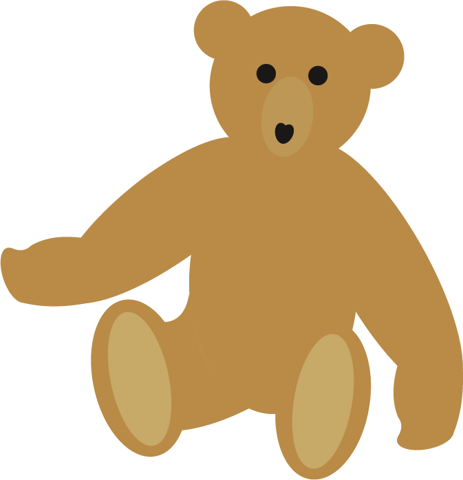
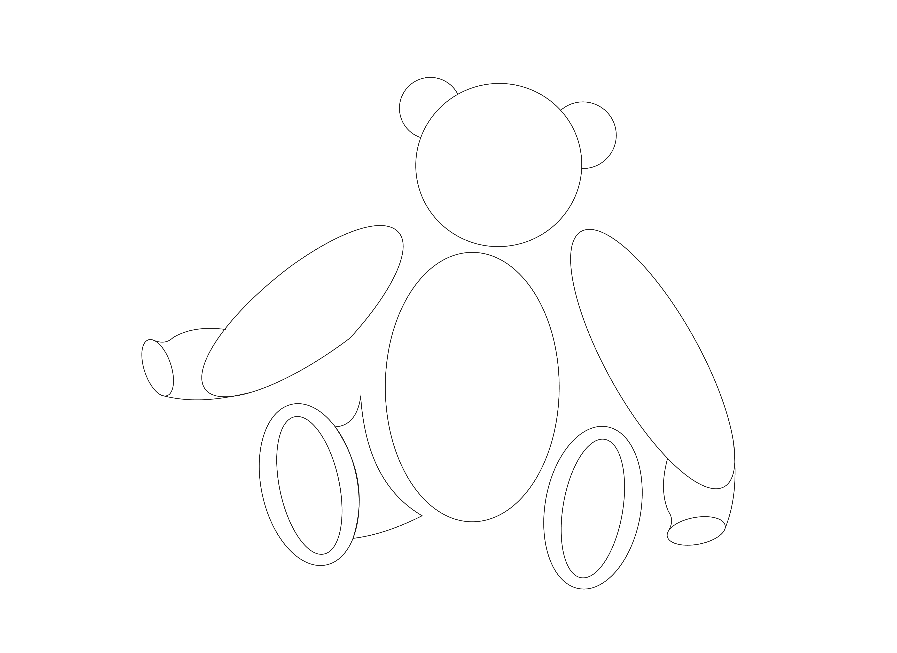
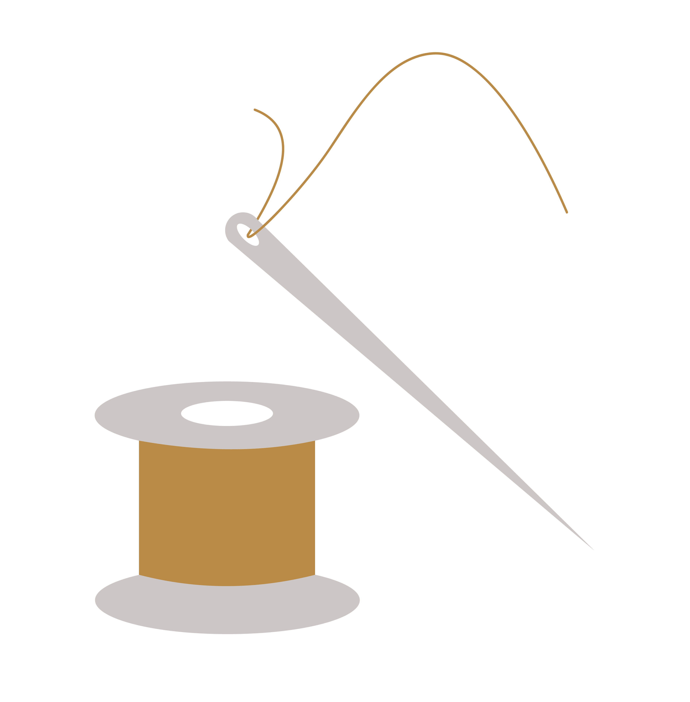
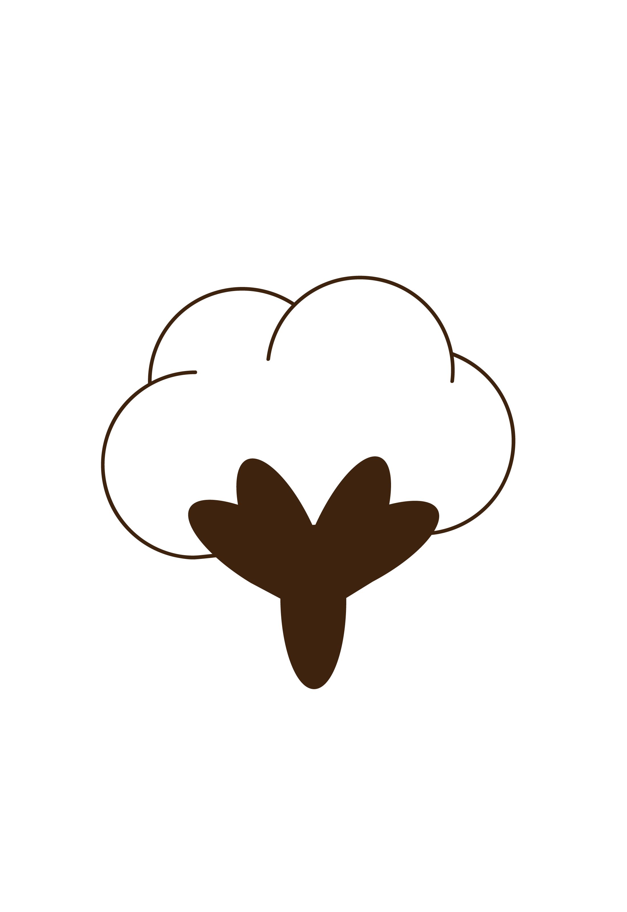

La Naissance du Teddy Bear
L'histoire de l'ours en peluche moderne, ou "Teddy Bear", commence en 1902, à la croisée de deux histoires distinctes aux États-Unis et en Allemagne.
Aux États-Unis, le président Theodore Roosevelt refuse de tirer sur un ours attaché lors d'une chasse, inspirant une caricature politique. En Allemagne, la créatrice de jouets Margarete Steiff conçoit un ours articulé qui deviendra rapidement populaire.
Composition du premier ours en peluche

Boutons pour les yeux

Tissu en laine

Broches métalliques

Copeaux de bois